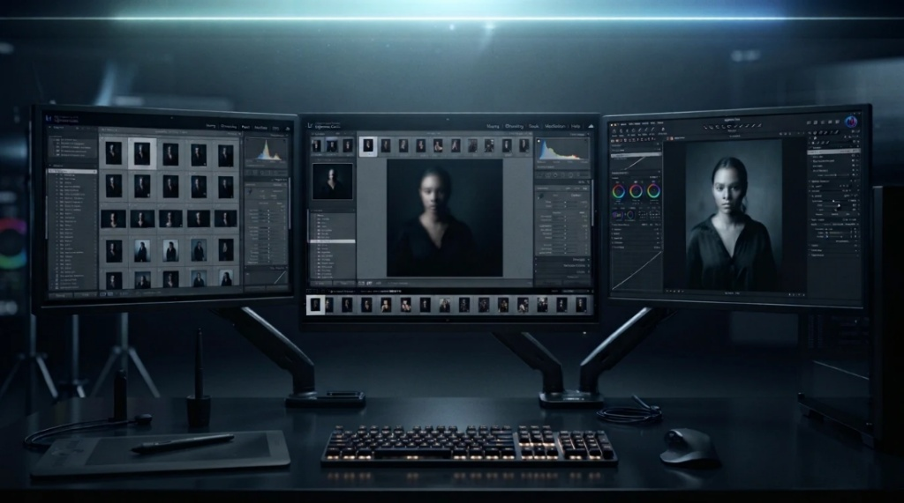

Traiter un portrait dans Lightroom Classic en 5 minutes
Tutoriel complet : passez d’un portrait RAW brut à une retouche naturelle, cohérente et prête à publier. Suivez les étapes dans l’ordre, puis comparez avec \ avant chaque validation.

Le poste de travail : un écran pour le catalogue et le tri, un pour le développement du portrait, un pour le contrôle des couleurs et la finition dans Photoshop. Gardez cette organisation sous les yeux pendant le tutoriel.
Étape 1 — Créez une copie virtuelle : Appuyez sur Ctrl + '. Gardez toujours l’original intact, puis faites tous les essais sur cette copie.
Étape 2 — Choisissez une Balance des blancs naturelle : Ouvrez le panneau Calibrage. Cliquez sur un gris neutre avec la pipette, ou utilisez As Shot puis réglez la température. Pour une peau naturelle, partez avec une petite correction selon l’ambiance : lumière chaude vers 4000–5000 K, lumière froide vers 5500–6500 K. Ne cherchez pas uniquement une valeur parfaite : comparez les mains, les lèvres et les blancs des yeux.
Étape 3 — Corrigez l’exposition globale : Dans Basique, ajustez d’abord l’exposition jusqu’à ce que la peau soit lisible sans détails écrasés. Maintenez Alt pour contrôler les hautes lumières écrasées et les ombres bouchées. Point de départ : hautes lumières -20 à -45, ombres +10 à +35.
Étape 4 — Redéfinissez les noirs et les blancs : Ajustez les Blancs puis les Noirs. Pour un fond studio blanc, gardez juste assez de noir sur les détails pour conserver la profondeur. À l’écran, une petite bande claire peut être acceptable si la peau reste naturelle.
Étape 5 — Structurez le visage : Réglez le contraste doucement. Évitez une clarté positive élevée : elle durcit les rides et les cernes. Point de départ portrait : Texture +5 à +10, Clarté -5 à -10, Netteté +25 à +40 selon la qualité initiale.
Étape 6 — Unifiez les couleurs : Faites descendre la vibrance à -5 seulement si les couleurs sont agressives, puis montez-la progressivement à +8 à +15 pour réveiller les yeux et les vêtements. N’utilisez la saturation que sur une couleur isolée dans le panneau HSL.
Étape 7 — Affinez les tons chair : Dans Mixage des couleurs, réduisez légèrement l’orange si la peau devient rouge, ou baissez légèrement le rouge pour calmer les lèvres. Ne dépassez pas quelques dizaines de points : les changements importants donnent vite un rendu plastique.
Étape 8 — Retouchez localement : Avec Maj + W, créez les masques nécessaires : Sujet, Iris et pupilles, Sourcils, Cheveux, puis Peau du visage si disponible. Sur la peau, Texture -5 à -12, Clarté -3 à -8. Sur les yeux, Exposition +0.10 à +0.25, Contraste +10, Netteté +15. Sur l’arrière-plan, baissez l’exposition de 0.15 à 0.40 EV si le sujet manque de séparation.
Étape 9 — Corrigez les retouches visibles : Zoomez à 100 % avec Ctrl + +. Effacez les imperfections ponctuelles avec l’outil Correction par copier/décaler, puis vérifiez que la peau conserve ses pores. Masquez les imperfections uniquement si elles distraient l’œil.
Étape 10 — Contrôlez l’ensemble : Appuyez sur \, puis sur Y. Vérifiez d’abord le visage, puis les yeux, les cheveux, les vêtements et enfin le fond. Si l’image paraît trop nette ou trop contrastée à 100 %, elle le sera sans doute encore plus au final : adoucissez légèrement.
Les étapes chronologiques
- 1. Préparation : Copie virtuelle, cadrage, recadrage et rotation d’horizon.
- 2. Balance des blancs : Pipette sur une zone neutre ou réglage thermique manuel.
- 3. Lumière : Exposition, hautes lumières, ombres, blancs et noirs.
- 4. Rendu : Contraste, texture, clarté, déhaze et netteté avec prudence.
- 5. Couleur : Vibrance, HSL orange/rouge, calibration si nécessaire.
- 6. Masques : Sujet, peau, yeux, sourcils, cheveux et arrière-plan.
- 7. Finition : Correction ponctuelle, grain naturel et export adapté.
Ce que vous gagnez
- Un rendu net et éclatant qui respecte le grain de peau
- Un flux de travail reproductible en 5 minutes par photo
- Une cohérence parfaite sur toute votre série de portraits